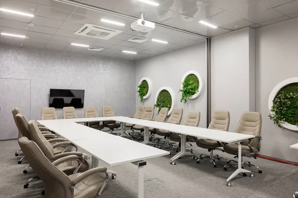

Reference
-
Renovace dřevěné podlahy v bytě
Broušení dřevěnných prken, oštření dvouvrstvým lakem Lamax. Nové olištování. Nanesení ochranného filmu.

-
Montáž koberce v kanceláři
Vyrovnání podkladu nivelační stěrkou. Pokládka 340 m² nového voděodolného koberce do kancelářského objektu.
